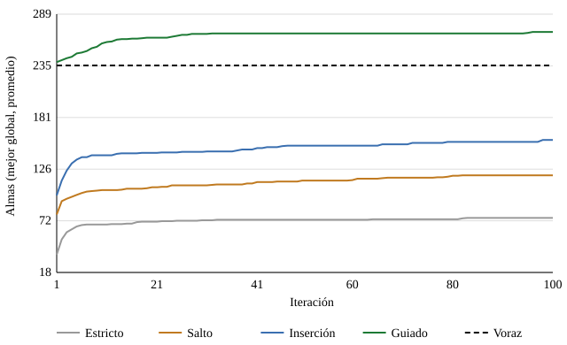
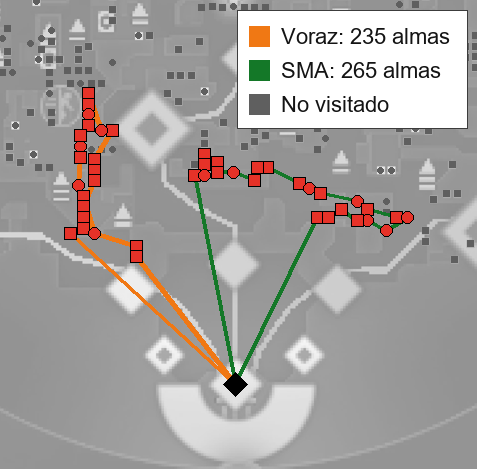

I. Introducción
En los videojuegos de arena de batalla en línea (MOBA) y disparadores como Deadlock, la economía del juego juega un rol determinante en la victoria. Las “almas” constituyen la divisa principal para adquirir ítems de mejora, habilidades pasivas y equipamiento estadístico.
Una fuente estratégica de almas la constituyen las cajas neutrales repartidas de forma discreta a lo largo del mapa. Los jugadores suelen abandonar periódicamente sus líneas de combate para ejecutar recorridos de recolección. Sin embargo, el tiempo dedicado a esta tarea implica un costo de oportunidad directo: el jugador no participa en enfrentamientos, defensa de torres ni control de objetivos principales.
Por consiguiente, la generación empírica de rutas —basada en la intuición del jugador— produce trayectorias subóptimas que arriesgan el tiempo de juego o pierden densidad de recolección. Este problema requiere un enfoque algorítmico automatizado capaz de resolver la disyuntiva entre maximización de recompensa y minimización de tiempo.
Este documento describe la formulación del problema, el algoritmo secuencial, su implementación sobre una instancia real del mapa y dos versiones paralelas de la evaluación de la población: con procesos en CPU y en GPU con CUDA.
II. Marco Teórico
A. El Problema de Optimización
El problema de recolección en Deadlock se clasifica formalmente como una variante del Orienteering Problem (OP) o Team Orienteering Problem (TOP) para un solo agente, combinado con restricciones de presupuesto temporal (Traveling Salesperson Problem with Profits - TSPP) [2], [5].
Sea un grafo completo G = (V, E) donde el conjunto de vértices V = {0, 1, …, n} representa las posiciones de las cajas en el mapa, siendo el vértice 0 el punto inicial (y de retorno) del jugador. Cada nodo i ∈ V \ {0} tiene asignada una recompensa Si > 0 equivalente a la cantidad de almas obtenibles. Cada arista (i, j) ∈ E tiene un costo de desplazamiento asociado cij > 0, que modela el tiempo de tránsito euclidiano o real.
El objetivo consiste en determinar una secuencia de visita o ruta R = (v0, v1, …, vk, v0) tal que se maximice la ganancia acumulada de almas sujeto a no rebasar un tiempo máximo prefijado tmax:
B. Slime Mould Algorithm (SMA)
El algoritmo Slime Mould Algorithm (Li et al., 2020) [1] es una metaheurística bioinspirada basada en el comportamiento de forrajeo y oscilación celular del moho de fango Physarum polycephalum. El moho forma una red de tubos protoplasmáticos óptimos entre fuentes de alimento aprovechando el flujo citoplásmico retroalimentado por gradientes de concentración.
En la formulación matemática continua de SMA, las posiciones de los moho-agentes se actualizan mediante la variación de pesos numéricos W que simulan la contracción citoplásmica según la calidad del alimento (fitness) obtenido:
donde bF es el mejor fitness alcanzado en la iteración actual, wF el peor fitness, S(i) el fitness de la solución i, y r un valor aleatorio en el intervalo [0, 1]. El signo positivo se aplica a la mitad de la población con mejor fitness y el negativo a la mitad restante. La posición de cada agente se actualiza como:
X* = vc · X, en otro caso(4)
donde Xb es la mejor posición encontrada, XA y XB son dos agentes elegidos al azar, vb ∈ [−a, a] y vc ∈ [−b, b] son vectores aleatorios uniformes, y
con t la iteración actual, T el número máximo de iteraciones y DF el mejor fitness global. Adicionalmente, con probabilidad z un agente se reinicia en una posición aleatoria del espacio de búsqueda, lo que preserva la exploración.
III. Desarrollo del Algoritmo Secuencial
A. Mapeo Discreto del Problema
Debido a que SMA fue concebido originalmente para espacios de búsqueda continuos ℝd, para el mapa de Deadlock se ha diseñado un mecanismo de mapeo discreto mediante vectores de prioridad continua convertidos a permutaciones válidas de cajas mediante la regla del Criterio de Selección Codificada (RK-SMA), basada en la representación de llaves aleatorias [4].
Cada agente mantiene un vector continuo Xi ∈ [0, 1]n. Para evaluar una solución, las dimensiones se ordenan de mayor a menor valor continuo, definiendo el orden explícito de visita a las cajas. Se agregan nodos a la ruta en ese orden estricto hasta que la adición de la siguiente caja viole la restricción de tiempo tmax. En la Sección IV se presentan variantes de esta decodificación.
B. Estructura y Pseudocódigo Secuencial
El algoritmo secuencial opera iterativamente evaluando el fitness (almas totales), recalculando los pesos protoplasmáticos y actualizando las posiciones continuas mediante operaciones de exploración y explotación.
Algoritmo 1: SMA Secuencial para Cajas Deadlock
Entrada: V, S, C, t_max, N_pop, Max_Iter
Salida: Mejor Ruta R_opt, Max Almas Z_max
1: Inicializar X_i (i = 1..N_pop) en [0,1]^n
2: mientras iter < Max_Iter hacer
3: para cada agente i hacer
4: R_i ← Decodificar_Ruta(X_i, C, t_max)
5: Fitness[i] ← Calcular_Almas(R_i, S)
6: fin para
7: Ordenar población (bF: mejor, wF: peor)
8: Calcular pesos W_i según Ec. (3)
9: para cada agente i hacer
10: Actualizar X_i con Ec. (4) y (5)
11: fin para
12: iter ← iter + 1
13: fin mientras
14: retornar R_opt, Z_max
C. Benchmark de Validación
Antes de la fase de despliegue sobre el mapa final del juego, se tiene contemplado evaluar el algoritmo secuencial con las instancias estandarizadas del Team Orienteering Problem de KU Leuven [3] (conjuntos Tsiligirides y Chao) adaptadas a una única ruta. La Tabla I resume la equivalencia entre ambos entornos. Los resultados de este documento corresponden a la instancia del mapa de Deadlock; la validación con dichas instancias queda como actividad pendiente.
Equivalencia de Parámetros de Benchmark
| Parámetro TOP | Entorno Deadlock | Rol en SMA |
|---|---|---|
| Vértices (n) | Ubicación de cajas | Dimensión del vector X |
| Puntuación (Si) | Almas por caja | Función objetivo |
| Tmax | Tiempo máximo de ruta | Filtro de factibilidad |
| Origen/Destino | Línea o base del jugador | Punto fijo V0 |
| Distancia Dij | Costo de movimiento | Matriz C |
IV. Implementación
El sistema se implementó en Python 3.12 con NumPy; la versión en GPU utiliza CUDA a través de la biblioteca CuPy [8]. El código fuente y una herramienta de visualización están disponibles públicamente [7]. La implementación se organiza en cuatro módulos: extracción de la instancia, optimización, aceleración en GPU y visualización.
A. Construcción de la Instancia
Las posiciones de los contenedores se obtuvieron de un mapa del juego anotado por el usuario u/Awsmminer de la plataforma Reddit [6]. En dicho mapa cada contenedor se indica con un marcador cuadrado de color puro que codifica su tipo (caja o urna) y su nivel (superficie, subterráneo o azotea).
El módulo extraer_nodos.py procesa la imagen de 2000 × 2000 píxeles en cuatro pasos: (i) clasificación de cada
píxel por distancia euclidiana en el espacio RGB a seis colores de referencia, con una tolerancia de 60 unidades (35 para el
amarillo, que se confunde con un ícono del mapa); (ii) agrupamiento de los píxeles en componentes 4-conexas; (iii) descarte de
componentes cuya área está fuera del rango esperado o cuya forma no es rectangular, y (iv) separación de marcadores adyacentes
mediante una rejilla definida por el lado típico del marcador (13 px). Las coordenadas resultantes se normalizan al intervalo
[0, 1]. La detección se verificó visualmente superponiendo los centroides sobre la imagen original. La Tabla II resume los
602 nodos obtenidos y la Fig. 1 muestra su distribución.
Contenedores Extraídos por Tipo y Nivel
| Nivel | Cajas | Urnas | Total |
|---|---|---|---|
| Superficie | 324 | 98 | 422 |
| Subterráneo | 52 | 28 | 80 |
| Azotea | 64 | 36 | 100 |
| Total | 440 | 162 | 602 |

B. Modelo de Tiempos
El costo de la arista (i, j) incluye el desplazamiento, el cambio de nivel y el tiempo necesario para romper el contenedor de destino:
donde pi son las coordenadas normalizadas, L el ancho del mapa, τ un factor de tortuosidad que compensa la presencia de muros, v la velocidad de desplazamiento, ℓi ∈ {0, 1, 2} el nivel (subterráneo, superficie, azotea), δ la penalización por nivel y βj el tiempo de ruptura. La Tabla III lista los valores empleados. Estos parámetros son estimaciones y no mediciones realizadas dentro del juego; por ello, los resultados deben interpretarse de manera comparativa entre métodos evaluados bajo el mismo modelo. Los nodos para los cuales c0j + cj0 > tmax se excluyen antes de la búsqueda, ya que no pueden formar parte de ninguna ruta factible.
Parámetros del Modelo
| Parámetro | Valor |
|---|---|
| Ancho del mapa L | 500 m |
| Velocidad v | 8,0 m/s |
| Tortuosidad τ | 1,3 |
| Penalización por nivel δ | 4,0 s |
| Tiempo de ruptura β (caja / urna) | 1,0 s / 1,5 s |
| Almas S (caja / urna) | 10 / 15 |
| Punto de inicio y retorno | Base del equipo |
C. Decodificadores
Se implementaron cuatro decodificaciones del vector X a una ruta factible. Todas garantizan el cumplimiento de la restricción (2), por lo que no se requiere penalización en la función objetivo.
- Estricto. La regla descrita en la Sección III-A: las cajas se agregan al final de la ruta en orden de llave y el proceso se detiene con la primera que no cabe.
- Salto. Igual que el anterior, pero las cajas que no caben se omiten y se continúa con las siguientes.
- Inserción. Las cajas se consideran en orden de llave; cada una se inserta entre los nodos consecutivos (a, b) que minimizan Δ = caj + cjb − cab, siempre que la ruta resultante sea factible.
- Guiado. Construcción voraz en la que, en cada paso, se inserta la caja j que maximiza el valor
donde Δj es el menor costo de inserción factible de j y γ = 4 limita el factor de sesgo al intervalo [e−2, e2]. Con xj = 0,5 para todo j se reproduce exactamente la heurística voraz; el SMA aprende qué cajas conviene favorecer o postergar para corregir las decisiones miopes de dicha heurística. Esta variante constituye una hibridación integrativa entre la metaheurística y una heurística constructiva. Su costo por evaluación es O(k2n), con k el número de cajas de la ruta, frente a O(n log n) del decodificador estricto.
D. Adaptación del SMA
Dado que el problema es de maximización y las almas no están acotadas en [0, 1], se realizaron los siguientes ajustes: (i) la población se ordena de mayor a menor fitness, de modo que el cociente de la Ec. (3) vale 0 para el mejor agente y 1 para el peor; (ii) la probabilidad de la Ec. (5) se normaliza como p = tanh(|S(i) − DF| / |DF|), pues sin normalización tomaría el valor 1 para casi todos los agentes; (iii) se emplea a = arctanh(1 − (t + 1) / (T + 1)) para evitar el valor infinito en la primera iteración; (iv) tras cada actualización las posiciones se recortan al intervalo [0, 1], y (v) Xb corresponde a la mejor posición global. Con el decodificador guiado, un agente se inicializa con xj = 0,5, de modo que la solución voraz forma parte de la población inicial.
E. Línea Base Voraz
Como referencia se implementó una heurística de inserción voraz que, mientras exista una caja factible, inserta aquella con mayor cociente Sj / Δj en su posición de menor costo. Es determinista y se ejecuta en milisegundos.
F. Evaluación Paralela de la Población
La decodificación concentra la mayor parte del costo por iteración: con el decodificador guiado cada agente requiere
O(k2n) operaciones, mientras que la actualización de posiciones es una operación vectorizada de
O(Nn). Como la decodificación de cada agente es independiente,
la función evaluar_poblacion se paraleliza directamente con un conjunto de procesos (multiprocessing.Pool):
la instancia se copia una sola vez a cada proceso al crearlo y en cada iteración solo se transmiten los vectores Xi
y las rutas resultantes. La actualización del SMA permanece secuencial.
G. Evaluación de la Población en GPU con CUDA
La versión con procesos está limitada por el número de núcleos del procesador y por la serialización de datos entre
procesos. Para explotar el paralelismo de datos con una granularidad más fina, el decodificador guiado se implementó como un
kernel CUDA escrito en C y compilado en tiempo de ejecución con NVRTC mediante CuPy (módulo sma_cuda.py). El
paralelismo se organiza en dos niveles:
- Nivel de agente. Se lanza una malla de N bloques, uno por agente, de modo que la población completa se decodifica en una sola invocación del kernel.
- Nivel de caja. Cada bloque tiene 256 hilos que se reparten las cajas candidatas. En cada paso de la construcción, cada hilo calcula para sus cajas el menor costo de inserción Δj sobre la ruta actual y el valor gj de la Ec. (7); una reducción en árbol en memoria compartida obtiene la caja de mayor valor y el hilo 0 la inserta en la ruta.
La matriz C (alrededor de 2,9 MB en doble precisión) y el vector S se copian a la memoria global de la GPU una sola vez por instancia, mientras que la ruta en construcción y los indicadores de cajas disponibles residen en la memoria compartida de cada bloque. En cada iteración del SMA solo se transfieren a la GPU los factores de sesgo de la población (N × n valores) y se recuperan las rutas. El Algoritmo 2 resume el kernel.
Algoritmo 2: Kernel CUDA (guiado)
Bloque b = agente; hilo h de H
1: seq ← (0, 0); t ← 0
2: libre[j] ← alcanzable[j]
3: repetir
4: para j = 1+h, 1+h+H, … ≤ n hacer
5: si libre[j]:
6: Δ_j ← mín. costo de insertar j
7: si t + Δ_j ≤ t_max:
8: g_j ← S_j / Δ_j · sesgo[b, j]
9: fin para
10: (j*, p*) ← argmax g_j (reducción)
11: si h = 0 y existe j*:
12: insertar j* tras p*
13: t ← t + Δ_j*; libre[j*] ← 0
14: sincronizar hilos del bloque
15: hasta que ninguna caja quepa
16: copiar seq a la ruta b
Para conservar la equivalencia con la versión en CPU, el kernel emplea aritmética de doble precisión y los mismos criterios de desempate: la primera posición de costo mínimo y, entre valores iguales, la caja de menor índice. La actualización de posiciones del SMA se mantiene en CPU porque es una operación vectorizada de bajo costo y así se conserva la secuencia del generador de números aleatorios: con la misma semilla, ambas versiones producen la misma ejecución. La GPU utilizada (arquitectura Pascal) ya no es compatible con el compilador de CUDA 13, por lo que se empleó NVRTC de CUDA 12,9.
H. Herramienta de Visualización
Se desarrolló un visor web que muestra la ruta sobre el mapa, la curva de convergencia y la evolución de la mejor ruta
iteración por iteración, con interfaz en español e inglés. Está disponible en
bistraw.github.io/-SoulPath-Crate-farming-routes-for-Deadlock.
V. Diseño Experimental
Los experimentos se ejecutaron en un equipo con procesador Intel Core i7-7700HQ a 2,80 GHz (4 núcleos físicos, 8 hilos), 32 GB de RAM, GPU NVIDIA
GeForce GTX 1050 (5 multiprocesadores, 640 núcleos CUDA, 4 GB, capacidad de cómputo 6,1),
Windows 10, Python 3.12.10, NumPy 2.5.3 y CuPy 14.2.0. Se utilizó una población de N = 30 agentes, T = 100 iteraciones y
z = 0,03. Cada configuración se repitió 10 veces con semillas 0 a 9; se reportan la media, la desviación
estándar muestral, el mejor y el peor valor. Salvo en los experimentos de escalamiento y de GPU, la población se evaluó con 4
procesos. Se realizaron cuatro experimentos: (i) comparación de los cuatro decodificadores con tmax = 90 s; (ii) desempeño
del decodificador guiado frente a la heurística voraz con tmax ∈ {45, 90, 150} s, y (iii) tiempo de cómputo
con 1, 2, 4 y 8 procesos (tmax = 90 s, 30 iteraciones, tres semillas), y (iv) repetición de los
experimentos (ii) y (iii) con la población evaluada en GPU. El experimento completo se reproduce con
python experimentos.py; la opción --solo-gpu ejecuta únicamente el experimento (iv).
VI. Resultados
A. Comparación de Decodificadores
La Tabla IV presenta los resultados con tmax = 90 s. El decodificador estricto, que corresponde a la regla planteada originalmente, obtuvo 75,5 almas en promedio, equivalente al 32,1 % de la solución voraz. Omitir las cajas que no caben (salto) elevó el promedio a 120,0 almas, y la inserción por costo mínimo a 157,0; sin embargo, ninguna de estas tres variantes alcanzó a la heurística voraz (235 almas). El decodificador guiado obtuvo 270,0 ± 8,2 almas, 14,9 % por encima de la referencia, y superó a la solución voraz en 10 de las 10 repeticiones.
Comparación de Decodificadores (tmax = 90 s, 10 repeticiones)
| Decodificador | Almas media ± desv. | Mejor | Peor | Cajas | Cómputo (s) |
|---|---|---|---|---|---|
| Estricto (III-A) | 75,5 ± 10,7 | 90 | 50 | 6,2 | 0,9 |
| Salto | 120,0 ± 7,8 | 135 | 110 | 10,0 | 1,4 |
| Inserción | 157,0 ± 20,2 | 200 | 135 | 13,7 | 10,6 |
| Guiado (propuesto) | 270,0 ± 8,2 | 275 | 250 | 23,6 | 34,8 |
| Voraz (referencia) | 235 | — | — | 21 | < 0,1 |
La mejora en calidad tiene un costo: cada corrida del decodificador guiado requirió en promedio 34,8 s, frente a 0,9 s del estricto, debido a la complejidad de la construcción voraz descrita en la Sección IV-C.
B. Desempeño Según el Presupuesto de Tiempo
La Tabla V compara el decodificador guiado con la heurística voraz para distintos presupuestos. El SMA guiado mejoró en promedio a la heurística voraz en todos los casos: 27,3 % con 45 s, 14,9 % con 90 s y 15,2 % con 150 s. El tiempo de cómputo crece con el presupuesto, pues las rutas contienen más cajas y el costo de cada decodificación aumenta de forma cuadrática con su longitud.
SMA Guiado Frente a la Heurística Voraz
| tmax (s) | Voraz | SMA media ± desv. | SMA mejor | Mejora media | Cómputo (s) |
|---|---|---|---|---|---|
| 45 | 55 | 70,0 ± 0,0 | 70 | +27,3 % | 1,5 |
| 90 | 235 | 270,0 ± 8,2 | 275 | +14,9 % | 34,8 |
| 150 | 450 | 518,5 ± 35,8 | 555 | +15,2 % | 110,9 |
C. Convergencia
La Fig. 2 muestra la evolución del mejor valor global. Los decodificadores basados únicamente en llaves aleatorias mejoran de forma gradual, pero permanecen por debajo de la referencia voraz durante las 100 iteraciones. El decodificador guiado inicia en el valor voraz, gracias al agente inicializado en 0,5, y alcanza un promedio de 266,0 almas en la iteración 25 y 270,0 al final. En promedio, su mejor solución se encontró en la iteración 23,3, aunque con una dispersión amplia (de la iteración 1 a la 96); dado que algunas repeticiones mejoraron cerca del final, no puede descartarse que un mayor número de iteraciones produzca mejoras adicionales.

D. Rutas Obtenidas
La Fig. 3 compara la ruta voraz (235 almas, 21 contenedores, 84,6 s) con la obtenida por el SMA guiado con la semilla 0 (265 almas, 23 contenedores, 89,0 s). La heurística voraz se dirige al grupo de cajas más próximo a la base, al noroeste, porque es el que ofrece el mejor cociente inmediato. El SMA, en cambio, selecciona un grupo situado al norte y noreste, cuyo acceso requiere un desplazamiento inicial mayor, pero que concentra más contenedores en poco espacio. Este comportamiento ilustra la limitación miope de la construcción voraz que el sesgo aprendido por el SMA permite corregir.

E. Tiempo de Cómputo y Paralelización
La Tabla VI reporta el tiempo de 30 iteraciones del SMA guiado. Con 2 procesos la aceleración fue de 1,48 y con 4 procesos de 2,11, lo que equivale a una eficiencia de 52,8 %. Con 8 procesos la aceleración aumentó a 2,92, pese a que el procesador cuenta con 4 núcleos físicos; los 4 hilos adicionales que ofrece la tecnología Hyper-Threading aprovechan los periodos en que un núcleo espera datos de memoria, aunque con una eficiencia por proceso menor (36,5 %). La eficiencia por debajo del ideal se explica por la sobrecarga de serializar los vectores y las rutas entre procesos en cada iteración, por la actualización del SMA, que permanece secuencial, y por el desbalance de carga, ya que los agentes con rutas más largas tardan más en decodificarse. La desviación estándar del caso secuencial (3,30 s) se debe a que cada semilla produce rutas de distinta longitud. Estos resultados justifican la exploración de esquemas de memoria compartida en la siguiente etapa.
Tiempo de Cómputo Según el Número de Procesos
| Procesos | Tiempo (s) | Aceleración | Eficiencia |
|---|---|---|---|
| 1 | 19,29 ± 3,30 | 1,00 | 100,0 % |
| 2 | 13,05 ± 2,01 | 1,48 | 73,9 % |
| 4 | 9,14 ± 0,71 | 2,11 | 52,8 % |
| 8 | 6,60 ± 0,80 | 2,92 | 36,5 % |
F. Aceleración en GPU
Con la población evaluada en GPU, las 30 iteraciones del experimento anterior requirieron 0,14 ± 0,06 s, frente a 19,29 s de la versión secuencial: una aceleración de 140, 48 veces mayor que la obtenida con 8 procesos. La Tabla VII repite las corridas de la Tabla V (100 iteraciones, 10 semillas) en GPU y las compara con la versión de 4 procesos. En 30 de las 30 corridas la GPU obtuvo exactamente las mismas almas que la CPU con la misma semilla, lo que confirma que el kernel reproduce la decodificación secuencial. La aceleración crece con el presupuesto: de 4,9 con 45 s a 125,3 con 150 s. Con presupuestos cortos las rutas tienen pocas cajas, la decodificación en CPU es barata y predominan los costos fijos de lanzar el kernel y copiar datos; con presupuestos largos cada paso de la construcción evalúa cientos de candidatos, trabajo que en la GPU se reparte entre los hilos del bloque.
CPU (4 Procesos) Frente a GPU, 100 Iteraciones
| tmax (s) | CPU (s) | GPU (s) | Aceleración | Almas iguales |
|---|---|---|---|---|
| 45 | 1,51 | 0,31 | 4,9 | 10 / 10 |
| 90 | 34,77 | 0,37 | 95,1 | 10 / 10 |
| 150 | 110,85 | 0,88 | 125,3 | 10 / 10 |
Tras la aceleración, el kernel (incluidas las copias entre CPU y GPU) representa solo el 45,4 % del tiempo de una iteración; el resto corresponde a la actualización del SMA y al cálculo del fitness, que permanecen en CPU. Por la ley de Amdahl, esta parte secuencial es ahora el principal límite para seguir reduciendo el tiempo. Además, con N = 30 se lanzan solo 30 bloques para 5 multiprocesadores, por lo que poblaciones mayores aprovecharían mejor la GPU.
VII. Discusión
Los resultados muestran que la representación por llaves aleatorias, aplicada de forma directa, resulta insuficiente para una instancia de este tamaño: con 602 nodos, las primeras posiciones de una permutación aleatoria corresponden a cajas dispersas por todo el mapa, y el presupuesto se agota en desplazamientos. La inserción por costo mínimo corrige el orden de visita, pero no la selección de cajas. El decodificador guiado conserva la representación continua del SMA y la combina con información del problema, lo que le permite partir de una solución competitiva y mejorarla.
Deben señalarse las siguientes limitaciones. Primero, la distancia euclidiana corregida por un factor constante no reproduce los recorridos reales, que dependen de muros, escaleras y tirolesas. Segundo, los parámetros de la Tabla III son estimaciones; la magnitud absoluta de las almas obtenidas depende de ellos, aunque la comparación entre métodos se realiza bajo el mismo modelo. Tercero, el juego asigna recompensas variables a los contenedores y estos reaparecen con el tiempo, aspectos que el modelo estático no considera. Finalmente, la validación con instancias de referencia del TOP aún no se ha realizado.
VIII. Conclusiones y Trabajo Futuro
Se implementó el SMA secuencial para el problema de recolección de cajas en Deadlock, junto con un procedimiento automático para construir la instancia a partir de un mapa anotado por la comunidad. La decodificación directa de llaves aleatorias resultó inadecuada para una instancia de 602 nodos, con un desempeño inferior al de una heurística voraz simple. El decodificador guiado, que integra el SMA con dicha heurística, superó a la referencia en promedio entre 14,9 % y 27,3 % según el presupuesto de tiempo. La evaluación paralela de la población con procesos obtuvo una aceleración de 2,11 con cuatro procesos, y la evaluación en GPU con CUDA, de 140 respecto a la versión secuencial, sin alterar los resultados.
Con la versión en GPU, una corrida completa del SMA se resuelve en menos de un segundo, lo que acerca su uso en tiempo real durante partidas activas. Como trabajo futuro se contempla trasladar también la actualización del SMA a la GPU, que ahora domina el tiempo de cómputo, evaluar poblaciones mayores que aprovechen todos los multiprocesadores y comparar con una versión en memoria compartida (OpenMP / multihilo) en CPU. También se contempla calibrar el modelo de tiempos con mediciones en el juego, sustituir la distancia euclidiana por distancias sobre la malla de navegación del mapa y completar la validación con las instancias de KU Leuven.
Agradecimientos
Los autores agradecen al usuario u/Awsmminer por elaborar y compartir el mapa con la ubicación de las cajas y urnas de Deadlock, sin el cual no habría sido posible construir la instancia del problema.
Referencias
- S. Li, H. Chen, M. Wang, A. A. Heidari, and S. Mirjalili, “Slime mould algorithm: A new method for stochastic optimization,” Future Generation Computer Systems, vol. 111, pp. 300–323, 2020.
- I. Chao, B. Golden, and E. Wasil, “The team orienteering problem,” European Journal of Operational Research, vol. 88, no. 3, pp. 464–474, 1996.
- KU Leuven, “The Orienteering Problem: Test Instances,” Division of Industrial Management, 2024. [Online]. Available: https://www.mech.kuleuven.be/en/mim/op
- J. C. Bean, “Genetics and random keys for sequencing and optimization,” ORSA Journal on Computing, vol. 6, no. 2, pp. 154–160, 1994.
- P. Vansteenwegen, W. Souffriau, and D. Van Oudheusden, “The orienteering problem: A survey,” European Journal of Operational Research, vol. 209, no. 1, pp. 1–10, 2011.
- u/Awsmminer, “Mapa de cajas y urnas de Deadlock (superficie, subterráneo y azoteas),” Reddit, 2026.
- M. F. Barrón Álvarez, L. M. Benítez Marín, and L. Merino Garfias, “SoulPath: Crate-farming routes for Deadlock,” repositorio de código, 2026. [Online]. Available: https://github.com/Bistraw/-SoulPath-Crate-farming-routes-for-Deadlock
- R. Okuta, Y. Unno, D. Nishino, S. Hido, and C. Loomis, “CuPy: A NumPy-compatible library for NVIDIA GPU calculations,” in Proc. Workshop on Machine Learning Systems (LearningSys), NIPS, 2017.